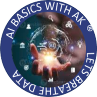
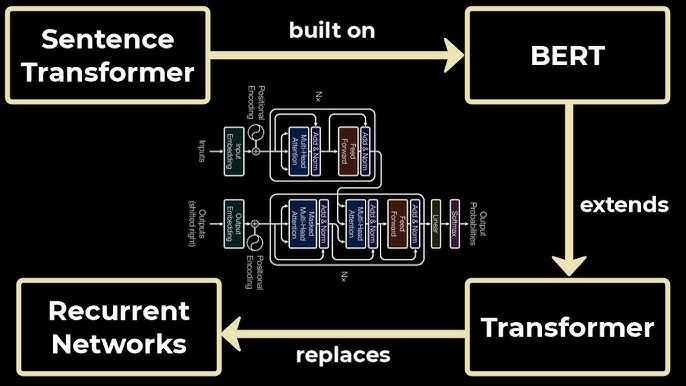
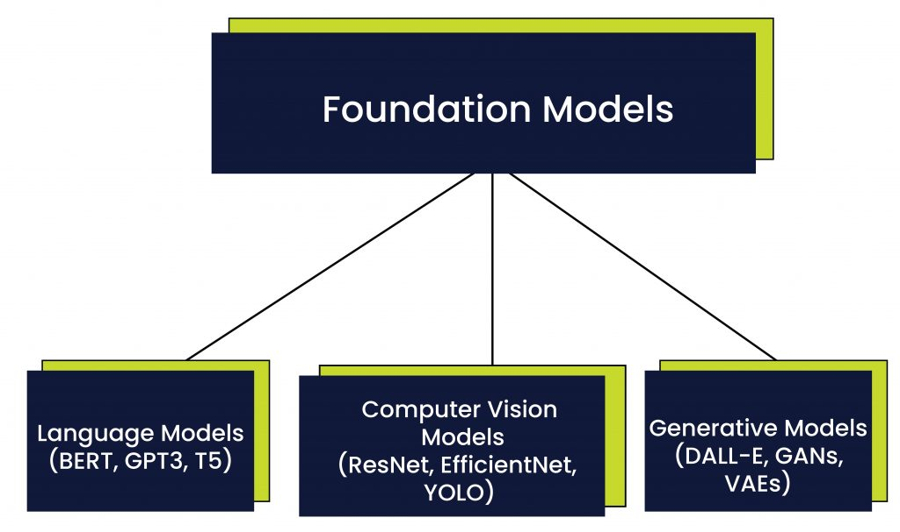

AI Basics with AK

Free YouTube course · slides · homework · code
Learn the basics of AI, one episode at a time.
Short videos on Python, statistics and the ideas behind modern AI, each with the slides I teach from, homework to practise on, and the demo code. Explained simply, in plain language.
Pick a season
Now airing
Season 03
Introduction to Statistics
From types of data to hypothesis tests and ANOVA: the statistics every data scientist leans on, built up one idea at a time.
Complete Season 02Introduction to Python Programming
From your first variable to classes, threads, debugging and an end-to-end project you deploy yourself.
Planned Season 04Coming next
The next season is in the works. Subscribe on YouTube to hear when the first episode lands.
No matching items
Recent episodes


From the blog

career
What Is Left for a Data Scientist When AI Writes the Code?
AI now writes the code and AutoML builds the model. What stays human for a data scientist: the DIKW climb from data to wisdom, the consulting layer…

LLMs
Representation Models - Text Classification
How representation models turn text into numbers: what BERT is, how masked language modelling and next sentence prediction train it, and how…

LLMs
Foundation Models - LLMs
What a foundation model is, explained with a restaurant's base gravy, plus how large language models and the transformer behind them work, and the…
No matching items
Don’t miss the next episode
Subscribe on YouTube for the videos, or follow the blog by RSS. For essays on psychology, culture and management, see my other site, Canvass And Analyze.
More from Arun
Essays
Canvass And Analyze
Essays on psychology, analytics and management.
Read the essays → Data vizTidy Tuesday
Weekly TidyTuesday charts in R and Python, each with the code.
See the charts → Study notesDeep Learning notebook
Notebooks on TensorFlow, neural networks, CNNs, LSTMs and NLP. Each one runs in Colab.
Open the notes → About mePortfolio
Who I am, what I work on, and how to get in touch.
Meet Arun →